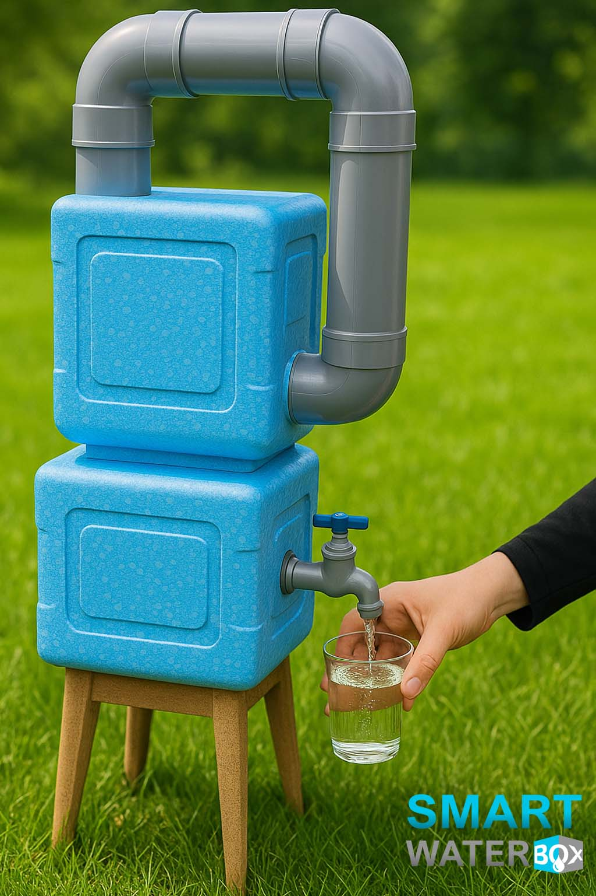

Affiliate disclosure: This independent guide contains an affiliate link. We may earn a commission at no additional cost to you. Verify current offer terms before purchasing.
Is SmartWaterBox a Physical Product or Digital Guide? What You Actually Receive

The short answer: what are you actually buying?
SmartWaterBox is currently presented by the vendor as a digital product. The core purchase is access to plans, instructions, a materials-and-tools list and supporting digital resources for a DIY water-generation project. It is not the purchase of a completed appliance that arrives ready to plug in. This distinction is important because promotional images can illustrate what a finished project may look like, while the discounted vendor page explicitly says the product is digital and that images are for visualization only.
For a buyer researching SmartWaterBox physical product or digital guide, the useful approach is to distinguish verified vendor wording from assumptions made by third-party pages. Promotional funnels can change, and different landing pages may display different prices or bonuses. The live page and checkout you personally see should therefore take priority over an older screenshot.
It also helps to keep the digital transaction separate from the DIY project itself. Buying instructions does not automatically include hardware, and a marketing estimate for parts is not a guaranteed local quotation. Before spending on components, review the instructions, compare local availability and decide whether the project fits your skills, environment and budget.
Why buyers can confuse the guide with a finished machine
The sales presentation talks extensively about building and using a water-generating device, so a quick reader can easily assume the advertised price buys the hardware itself. The current offer, however, describes blueprints and a DIY guide. A careful buyer should separate the information product from the later physical build. The guide can be delivered electronically; the components needed to construct a device must be obtained separately.
For a buyer researching SmartWaterBox physical product or digital guide, the useful approach is to distinguish verified vendor wording from assumptions made by third-party pages. Promotional funnels can change, and different landing pages may display different prices or bonuses. The live page and checkout you personally see should therefore take priority over an older screenshot.
It also helps to keep the digital transaction separate from the DIY project itself. Buying instructions does not automatically include hardware, and a marketing estimate for parts is not a guaranteed local quotation. Before spending on components, review the instructions, compare local availability and decide whether the project fits your skills, environment and budget.
What the current $39 offer says is included
The current main sales presentation advertises the Smart Water Box Guide at $39 and describes a full materials-and-tools list, safety and storage protocols, lifetime support access and digital bonuses. The page also describes the order as one-time, an instant download and without a subscription. Promotional pricing can change, so the live checkout remains the final place to verify what your own transaction includes.
For a buyer researching SmartWaterBox physical product or digital guide, the useful approach is to distinguish verified vendor wording from assumptions made by third-party pages. Promotional funnels can change, and different landing pages may display different prices or bonuses. The live page and checkout you personally see should therefore take priority over an older screenshot.
It also helps to keep the digital transaction separate from the DIY project itself. Buying instructions does not automatically include hardware, and a marketing estimate for parts is not a guaranteed local quotation. Before spending on components, review the instructions, compare local availability and decide whether the project fits your skills, environment and budget.
Are the physical parts included?
The digital-product wording means the parts are not a boxed kit included with the guide price. Buyers should review the materials list before ordering components. Local availability, brand choices, tools already owned and substitutions can change the real build budget. Do not interpret the low digital-guide price as the total cost of a completed water generator.
For a buyer researching SmartWaterBox physical product or digital guide, the useful approach is to distinguish verified vendor wording from assumptions made by third-party pages. Promotional funnels can change, and different landing pages may display different prices or bonuses. The live page and checkout you personally see should therefore take priority over an older screenshot.
It also helps to keep the digital transaction separate from the DIY project itself. Buying instructions does not automatically include hardware, and a marketing estimate for parts is not a guaranteed local quotation. Before spending on components, review the instructions, compare local availability and decide whether the project fits your skills, environment and budget.
How delivery works for a digital product
A digital guide does not require normal parcel shipping. After a successful order, access is intended to be electronic. Save the receipt, checkout email and access instructions. If an access message is delayed, check spam or junk folders and use the vendor or ClickBank order-support route rather than placing a duplicate order.
For a buyer researching SmartWaterBox physical product or digital guide, the useful approach is to distinguish verified vendor wording from assumptions made by third-party pages. Promotional funnels can change, and different landing pages may display different prices or bonuses. The live page and checkout you personally see should therefore take priority over an older screenshot.
It also helps to keep the digital transaction separate from the DIY project itself. Buying instructions does not automatically include hardware, and a marketing estimate for parts is not a guaranteed local quotation. Before spending on components, review the instructions, compare local availability and decide whether the project fits your skills, environment and budget.
What the bonuses change—and what they do not
The vendor currently advertises three bonuses with some versions of the main offer. Bonuses add digital information, but they do not turn the purchase into a physical hardware bundle. Because funnels can show different promotions, verify the exact bonuses on the page and checkout you see rather than relying on an older screenshot or third-party review.
For a buyer researching SmartWaterBox physical product or digital guide, the useful approach is to distinguish verified vendor wording from assumptions made by third-party pages. Promotional funnels can change, and different landing pages may display different prices or bonuses. The live page and checkout you personally see should therefore take priority over an older screenshot.
It also helps to keep the digital transaction separate from the DIY project itself. Buying instructions does not automatically include hardware, and a marketing estimate for parts is not a guaranteed local quotation. Before spending on components, review the instructions, compare local availability and decide whether the project fits your skills, environment and budget.
How to evaluate the offer before buying
Ask whether you want a DIY information product and whether you are comfortable sourcing components and assembling a project. Check the guide price, current guarantee, any optional post-purchase offers and the likely parts budget. This is more useful than judging the offer solely from the visual representation of a finished device.
For a buyer researching SmartWaterBox physical product or digital guide, the useful approach is to distinguish verified vendor wording from assumptions made by third-party pages. Promotional funnels can change, and different landing pages may display different prices or bonuses. The live page and checkout you personally see should therefore take priority over an older screenshot.
It also helps to keep the digital transaction separate from the DIY project itself. Buying instructions does not automatically include hardware, and a marketing estimate for parts is not a guaranteed local quotation. Before spending on components, review the instructions, compare local availability and decide whether the project fits your skills, environment and budget.
What to save after checkout
Keep the ClickBank receipt or transaction confirmation, purchase date, email used for the order and any download/access message. These records make it easier to retrieve access, identify the transaction and use support or refund channels if needed.
For a buyer researching SmartWaterBox physical product or digital guide, the useful approach is to distinguish verified vendor wording from assumptions made by third-party pages. Promotional funnels can change, and different landing pages may display different prices or bonuses. The live page and checkout you personally see should therefore take priority over an older screenshot.
It also helps to keep the digital transaction separate from the DIY project itself. Buying instructions does not automatically include hardware, and a marketing estimate for parts is not a guaranteed local quotation. Before spending on components, review the instructions, compare local availability and decide whether the project fits your skills, environment and budget.
Frequently Asked Questions
Does SmartWaterBox ship a completed machine?
The current vendor pages describe the product as digital; the discounted page explicitly says images are for visualization only.
Is SmartWaterBox an instant download?
The main sales presentation currently describes it as an instant download.
Are parts included in the $39 price?
The offer is for digital plans and information, so physical build components should be budgeted separately.
Is there a guarantee?
Current vendor pages advertise a 60-day money-back guarantee for the product purchase.
Is there a subscription?
The current main sales page says the purchase is one-time with no subscription.
Final Buyer Checklist
Before ordering, confirm that you understand the product format, check the exact price shown on your checkout, read the current guarantee and billing language, and save your receipt. Before building, price the required components locally and consider tools and maintenance separately. If an optional offer appears, accept it only if you understand what it adds and intend to purchase it.
Check the Current SmartWaterBox Offer
Verify today's price, digital product details and checkout terms.
Check Current SmartWaterBox Offer